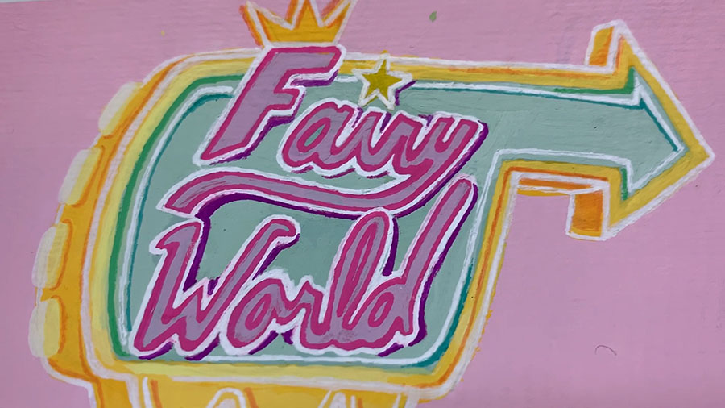

I've been working with different types of acrylic paints since I was young. I started working with acrylic paints because my grandmother painted with acrylics. From a very young age my grandma would teach me to paint on everything we could get our hands on. We continued the hobby all throughout the time I was in school, later taking classes together. Even after moving away for college I still talk to her about my paintings and share new tips with her.
| Sources | |
|---|---|
| Pinterest Inspo Board! | |
| Personal Photos | My Reference Photography |